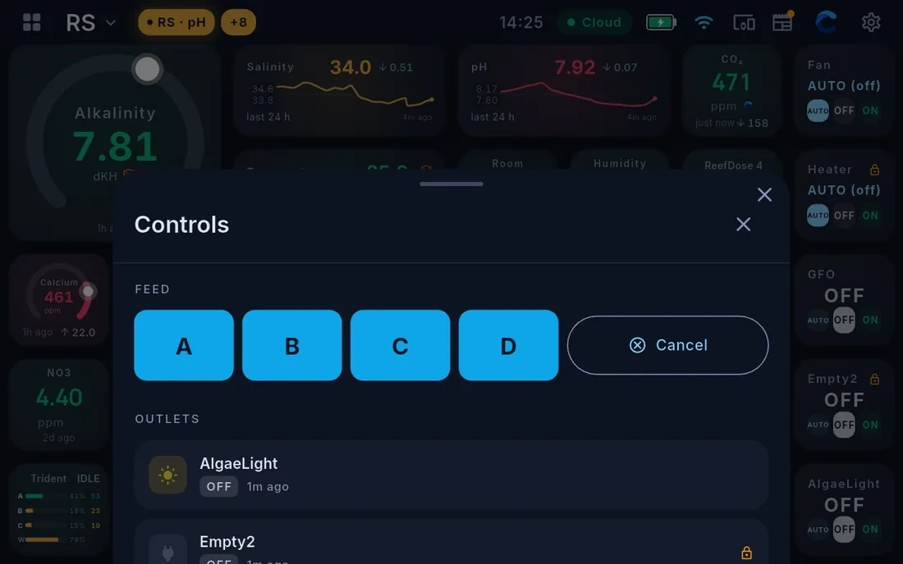

Outlets and controls
Cora Max can switch the equipment on your system — from control widgets on the dashboard, from the Outlets & Feed drawer, or by voice.
The three states
Every outlet is in one of three states.
Auto returns the outlet to its Apex programming. This is where an outlet should sit most of the time.
Off and On are manual overrides. They take effect at once and stay until you change them back. They do not expire, and nothing puts them back for you.
Switching from the dashboard
Control widgets show the three states with the current one highlighted. Tap the state you want.
Some outlets carry a padlock. It does not have to be switched off anywhere — it means the outlet asks you to confirm before it changes, so a stray tap cannot switch something critical. See below.
The Controls drawer
Pull up the tab at the bottom of the dashboard to open Controls — every outlet on the system in one place, whether or not it has a widget, plus the feed cycles.

An outlet carrying a padlock requires an explicit confirmation before it changes. Tapping it opens a dialog naming the outlet, its current state, and the override you are about to apply. It is a confirmation step, not a lock to be switched off elsewhere.
Feed mode
Feed mode is the safe way to pause flow for feeding. It pauses the equipment that should be paused, leaves alone the equipment that should not, and puts everything back by itself when the time is up.
Use it in preference to switching pumps off by hand, because it restores the system without depending on you to remember.
Feed cycles are lettered A, B, C and D — the cycles your controller defines, each pausing a different set of equipment. Pick the one that matches what you are doing. Cancel ends a running cycle early and restores everything immediately.
Start one from the Controls drawer, or say "start feed mode".
By voice
You can switch outlets by voice — "turn the skimmer off", "put the fan back on auto".
Anything that reaches your equipment is confirmed before it happens: Cora tells you what it is about to do and waits for you to agree. It will not act on an instruction it is not sure about.
See Talking to Cora.
Seeing what happened
Every request is recorded, along with what asked for it — this app, a Cora screen, voice, the Assistant, an automation rule, a smart button or your account — and how it travelled. On your phone that is Settings → Activity.
This is the first place to look when something changed and you do not know why.
Written for Cora Max 0.28.37 and Cora Mobile 0.5.55.
Still stuck? Email cora@coraiq.tech and we'll help.